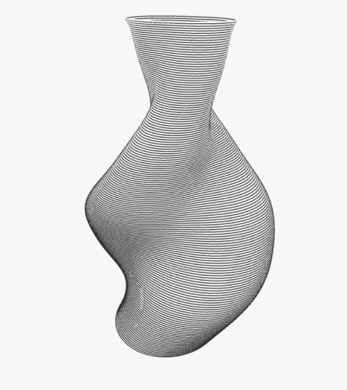
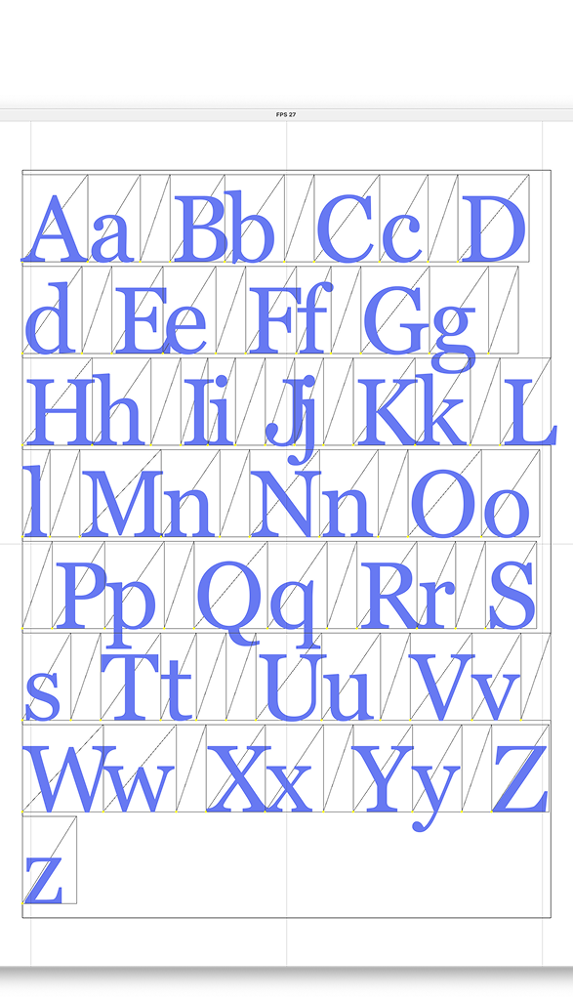
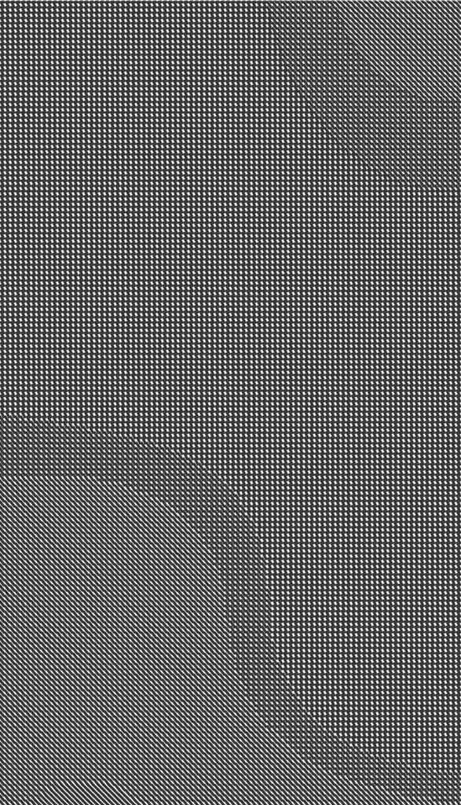
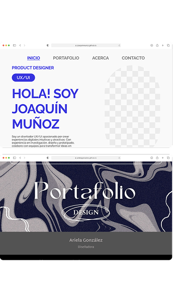
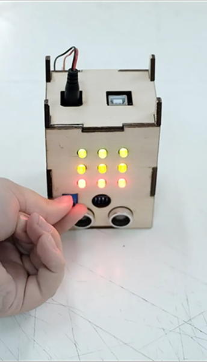
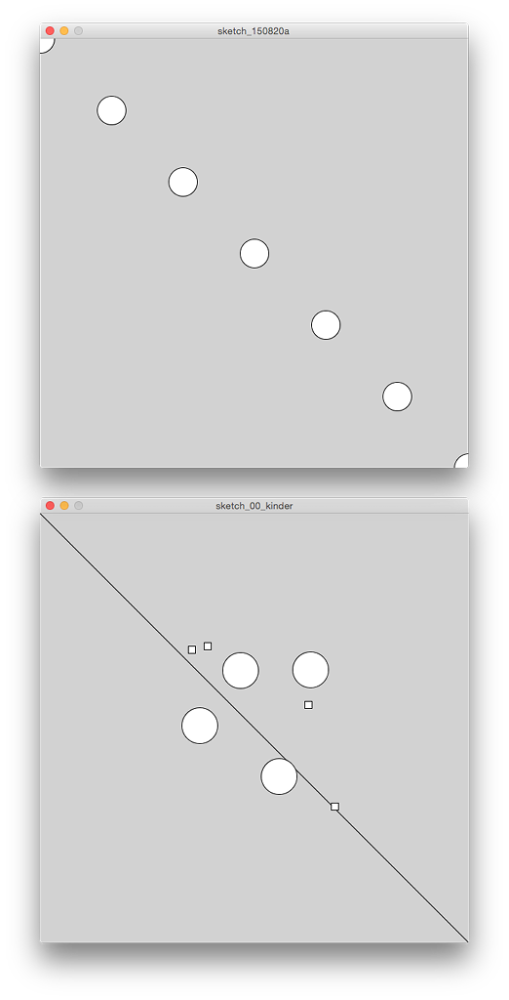

Dominga Generativa
Diseño y simulación de geometrías para impresión FDM (Fused Deposition Modeling)

Diseño y simulación de geometrías para impresión FDM (Fused Deposition Modeling)

Interfaz generativa para la producción tipográfica, geométrica y pictórica en pen plotter

Prototipos e interfaces para la exploración de algoritmos generativos en formatos digitales y análogos

Introducción a la investigación y desarrollo multidisciplinaria de productos digitales

Prototipos de interfaces de interacción en diseño de objetos

Introducción y profundización de lógicas computacionales para el diseño de procesos de creación gráfica